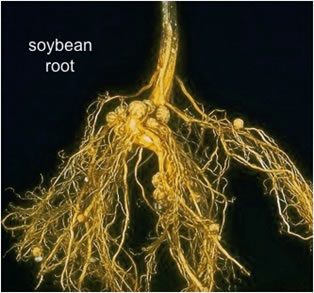

AMBE 101 :: Lecture 29 :: PLANT – MICROBE INTERACTIONS

Plant - Microbe symbioses
1. Many microbes (bacteria, fungi) have important symbioses with plants
2. Rhizosphere = thin layer of soil immediately attached to root hairs of plants. Typically contains 109 microbes/g of soil.
3. Many rhizosphere organisms are ectosymbionts, living outside the roots. Others are endosymbionts, living inside or penetrating into plant roots.
4. Many of these bacteria contribute Nitrogen fixation, obtain plant nutrients in return (see below for Rhizobium symbiosis).
Rhizobium-Legume symbioses
5. Plants of the legume family (soybeans, clover, alfalfa, beans, peas) can grow in soils lacking nitrogen compounds required by other plants. How?
6. These plants contain endosymbiotic Rhizobium bacteria that grow in root nodules. Rhizobia can fix atmospheric Nitrogen gas (N2)
N2 + 6[H] 2 NH3
7. The reaction requires total lack of oxygen and lots of energy as ATP. To bind oxygen and get rid of it, bacteria use protein called leghemoglobin, somewhat similar to animal hemoglobin. Globin part is encoded in plant genome, heme group is encoded in bacterial genome. Neither partner can fix nitrogen alone, only in symbiosis.

Hydrothermal vent Communities
- Occurs only near thermal springs on ocean floor, 2 miles or more below surface. Totally black, no sunlight penetrates below 600 feet.
- Associated with spreading centers of tectonic plates where hot magma close to surface causes area of floor to slowly drift apart.
- Seawater seeps down, mixes w/ minerals at high temperature comes back to ocean water in plumes at 270-380 deg. C. These are sometimes called black smokers since minerals precipitate as black cloud when in contact with cold sea water .
- Contains high levels of inorganics: Mn2+, H2, usually H2S; very low in organic matter
- Astonishing discovery: such regions are densely populated by a community of unusual animals: 2 m long tube worms, giant clams, mussels, white shrimp.
- What do they eat? Unlike earth's surface, there is no source of light to stimulate phototrophs, they "eat" chemolithotrophic bacteria!
- Example: Inside the tube worms live huge colonies of bacterial endosymbionts. These are autotrophic chemolithotrophs, oxidizing sulfide to sulfate as their energy source. As bacteria grow, they provide carbon and nitrogen compounds for worms to feed on. Have not been cultivated outside of host, so little is known about details of the bacterium.
Ruminant Symbiosis
- Ruminants are the herbivorous mammals whose digestive tract contains four chambers. First chamber (largest) is the rumen, provides a place for bacteria to break down the fiber in the plants so the cow can use it for energy.Ý
- Includes cows, sheep, giraffes, buffalo, and elk.
- Ruminants eat grasses and other plant materials, but do not produce enzymes to digest cellulose, the primary plant metabolite.
- Instead, ruminants rely on huge microbial community in rumen to digest plant materials. Microbial densities can reach as high as 1012 microorganisms/ml, the highest density found anywhere in nature.
- Ruminants feed off fermentation waste products of microorganisms; mainly acetic acid, propionic acid, and butyric acid.
Gnotobiotic Animals
- Gnotobiotic = "known microbiota"; animal host is either entirely free of microbes (aka "germfree", "axenic") or has a microbiota whose identity is completely known.
- Animals in utero are germfree, but acquire resident bacteria within hours of birth.
- Relatively easy to produce germfree animals for birds. Sterilize shell, use sterile incubator, keep animals in an environment where all air, food, water is sterilized before entry.
- More difficult to establish germfree animals other than birds. Need cesarean section of pgrenant females, germfree isolation chambers where all air, food, water is sterilized before entry.
- Germfree animals generally are less healthy than animals with normal microbiota. Defects include:
- Greater vitamin requirements for K and B complex
- lower cardiac output
- much more susceptible to pathogens -- normal microbiota colonize access sites, often compete successfully to prevent pathogens from binding to host tissues.much smaller infectious dose required to initiate an infection
Interrelationship between microorganisms: Beneficial and harmful relationships
Interrelationships in soils are of 3 types
- Plant microbe interaction
- Microbe – microbe interaction and
- Plant microbe – microbe interaction
a) Plant microbe interaction
It mainly constitutes the association of microorganism with plants little in a positive way or in a negative way. The positive approach is mainly the symbiotic relationships and the negative approach constituents mainly pathogen plant interactions.
b) Plant microbe – microbe interaction
Also called tripartite symbiosis
Eg: Alnus – Frankia –Mycorrhiza and Casbarina – Frankia – Mycorrhiza
Ceanothus roots, with Frankia vesicles
c) Microbe – microbe interaction
Microbial interaction in soil
Interrelationship between microorganisms: Beneficial and harmful relationship
Microorganisms live in the soil, not in the form of pure culture, but as complex populations. Each particle of soil contains more than one type of organisms. So, microbial ecosystem of soil is the sum of the biotic and the abiotic components of soil. Many of these organisms depend upon one another for direct and indirect nutrients. Some complete with one another for energy sources and for the elements and components used as nutrients. This results in the formation of numerous associations among the soil micro organic. The composition of the microflora of any habitat is governed by the biological equilibrium created by the associations and interactions of all individual found in the community.
The micro organic that inhabits the soil exhibited many different types of associations or interactions. Some of the associations are indifferent or neutral, some are beneficial type of interactions and others are detrimental or negative.
Beneficial / positive interactions
a. neutralism
b. Symbiosis / mutualism
c. Protoco-operation
d. Communalism
a) Neutralism
It is a type of neutral association, in two microorganisms behaves entirely independently or eg: Each could utilize different nutrients with out producing metabolic end products that are inhibitory. This might be transitory as the condition change in the environment, parituclary the availability of nutrients, the relationship might change.
Symbiosis / Mutualism
Mutualism is a form of symbiosis in which both organisms benefit. An example of mutualism is a clownfish and sea anemones. The clownfish gets protection, while the sea anemones become clean. This is mutualism, because both water animals benefit from having each other around
b) Proto co-operation
One type of mutualistic association is that involving the exchange of nutrients between two species, a phenomenon called syntrophism.
Many micro organic synthesize the vitamins and anaerobic acids in excess of their nutritional requirements. Others have a requirement of one or more of these nutrients. Hence certain combinations of species will grow together but not apart when nutrient levels are very low.
Nutritional proto co-operation has been demonstrated in cultures. Eg: In a medium deficient in nicotinic acid and biotin, neither Proteus vulgaris nor Bacillus polymyxa will multiply as the former (B) requires nicotinic acid and the latter biotin. In mixed culture, in the same medium however both grown since the partner bacterium synthesizes the missing vitamins.
c) Symbiosis
The living together of two or more organisms; microbial association
Symbiotic association is evident in soil among several groups of organisms algae and fungi in lichens, bacteria residing with in protozoa cells, bacteria and roots in the legume symbiosis, fungi and roots in mycoorhizae.
In lichens, the algae and fungi are in such an intimate physical and physiological relationship that the lichens they make are classified as distinct organism. The alga benefits in part are se of the protection afforded to it by the hyphae that envelop and protect it from environmental stresses. While, the fungi gains by making use of the CO2 fixed by its photosynthetic partner. Where BGA participants, the heterotraph benefits from the fixed N2.
Symbiotic relationship exists between micro and macro organisms. R-L associate N2 fixed is transferred to legume and organic which is transferred to the ® by CO2 metabolizing legume host.
Anabaena with heterocysts
d) Commensalisms
It is the type of beneficial association, in which only one species derives benefit while the other is unaffected. This occurs commonly in soil with respect to degradation of complex molecules like cellulose and lignin. One patter can attack a substrate not available to the second organism, but the decomposition results in the formation of products utilized by the second. The one which offer eg: (1) Many fungi able to degrade cellulose and yield glucose and organic acids. This can serve as a which source for many bacteria and fungi, which are non cellulolytic (2) The second type of commensal association arises from the need of many micro organic for growth factors. These compounds are synthesized by many micro organisms and their exertion permits the proliferation of nutritionally fastidious soil inhabitants.
III. Negative / harmful / deleterious interactions
Detrimental effects of one species on its neighbours are quite common in soil, and they are ditched by the decreases in abundance or metabolic activities of the susceptible organisms.
This include
a) Competition
b) Amensalism
c) Parasitism and predation
a. Competition
It is the rivalry for limiting nutrients or other common needs. In such situations the best adapted microbial species will predominate or infact, eliminate other species which are dependent upon the same limited nutrient substances.
Eg: Competition between strains derived from soil and those applied with legume seeds at the time of sowing. The better competitor involves the root hairs more frequently and it is responsible for a high % of nodules.
Sea Anemones compete for the territory in tide pools
b. Amensalism
It is a negative interaction, in which the release of products by one species is toxic to its neighbours. Antagonism is a type of ammensalism.
. Antagonism
The killing, injury or inhibition of growth of one species of micro organisms by another or when one organism adversely affects the environmental of the other is refered as antagonism.
The toxic compounds are antibiotic. An antibiotic is a substance formed by one organic that in low concentrations inhibits the growth of another organism. Antibiotics are common among Streptomyces isolates, but numerous strains of Micromonespora and Nocardia are also active. The most common frequently encountered (B) synthesis antibiosis are species of Bacillus strains of Pseudomonas species of Peniciliu, Trichoderma, Aspgerillus, Fusarium are also excrete antibiotic substance.
Anitimicrobial compounds against (F) are present in the soil, which inhibit the germination of fungal spores. This phenomenon is termed as fungistasis. Cyanide is produced by certain (F) in concentrations toxic to other microorganisms, and algae elaborate fatty acids which exhibit and marked antibacterial activity other metabolic products that may result from microbial activity in soil, which are likely to be inhibiting to other species are CH4, sulfides and other volatile S compounds. B. t toxin to lepidopteran insect pestd
Myxobacteria (slime (B)) and streptomyces are antagonistic because they secrete potent lytic enzymes which destroy other cells by digesting their cell wall. The degraded cellular material as well as they released protoplasmic material, which serve as nutrients.
d. Predation
Direct attack of one organism on another predation is one of the most dramatic interrelationships among the micro organic in nature of the many microscopic inhabitants of soil, the bacteria stand out as particularly prove to the attach of predators. The most numerous predators on (B) are protozoans, which by feeding on the billions of (B) undisputedly affect their populations. Protozoans are a key factor in limiting the size of bacterial populations. Probably reducing the abundance of cells and serving to maintain a diverse community.
- Myxobacteria and cellular slime molds also affect by feeding directly on them
- Bacteria of the diverse genera are attacked by bacteriophages
- Bdellovibrio is ubiquitous, capable of attacking a number of bacterial genera.
- Parasitism is between two types of (B), or between different organisms of the same group (F, B, A).
- Creation of conditions by one organism which are unfavorable for the growth of another (change in pH).
- Production of specific substances by one organisms which are injurious to growth of other ( organic alcohols, quinones and antibiotics)
- Direct parasitism of one organism upon another- various effects of (F) upon (B), of (B) upon (F).
e. Parasitism
Is a form of symbiosis in which one organism benefits and the other is harmed. An example of parasitism is wasp’s eggs and caterpillar. When the eggs hatch into young wasps, these young wasps burrow into the body of the caterpillar. The young wasps feed on the caterpillar’s tissues. After a month or so, the young wasps chew their way out of the dying caterpillar’s body and spin cocoons. Afterwards, the young wasps become adult wasps. This is parasitism, because the caterpillar is harmed while the young wasps benefit from feeding on the caterpillar.
| Download this lecture as PDF here |